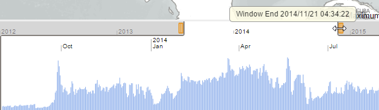
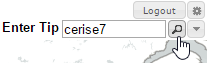
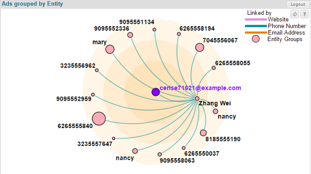
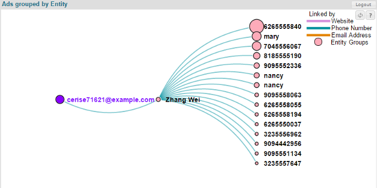
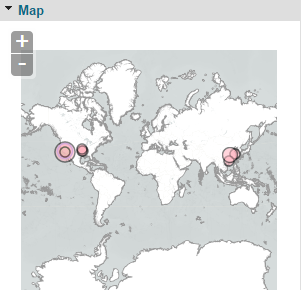
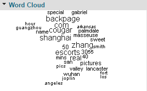
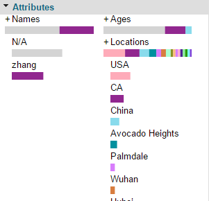
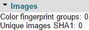
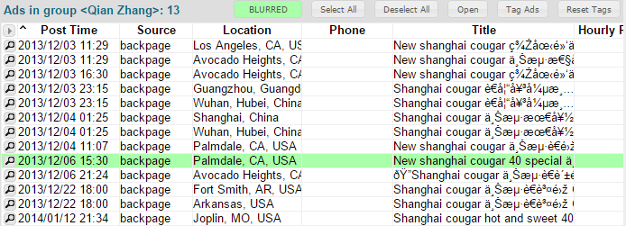

User Guide
This guide is designed to help analysts understand how to use TellFinder to detect the behavior of individuals and organizations engaged in human trafficking by analyzing publicly available Internet escort advertisements.
The following topics are covered in this guide:
For information about building, installing and running the Influent source code, see the Development page.
Analytic Scenario
Consider an analytic scenario in which a tip identifies an entity with the alias cerise7, who is allegedly involved in the trafficking of young girls in the Los Angeles, CA area. You can use TellFinder to locate entities who have used in Internet escort advertisements or who are otherwise associated with this alias.
Please note that names and other identifying attributes used in this scenario have been anonymized.
Logging In
TellFinder can be accessed using any modern Web browser (e.g., Chrome, Firefox, Internet Explorer or Safari).
To start a new session
- Open your Web browser and navigate to the location of your TellFinder Web server (e.g.,
http://localhost:8080/tellfinder/). - Enter the User Name and Password supplied to you by your administrator and click Submit to log in.
Beginning an Investigation
There are two ways you could use TellFinder to begin the investigation of the cerise7 tip:
- Review a broad regional listing of all posting activity in the Los Angeles area to look for relevant information.
- Perform a tip search against the TellFinder databases to return a list of all ad groups that match the tip.
The following sections describe both starting points.
Browse by Region
The TellFinder home page illustrates the scope of scraped advertisements on a geographic map. Radial blooms over each city or region indicate how much activity was detected there; larger blooms indicate greater activity.

Panning and Zooming
The TellFinder map shares familiar controls with other modern Web-based map clients such as Google Maps.
To zoom in or out
Perform any of the following actions:
- To quickly zoom in, double click on the area you want to view.
- Click the Zoom In
 or Zoom Out button in the upper left corner of the map.
or Zoom Out button in the upper left corner of the map. - Hover your cursor over an area and use mouse scroll wheel to zoom in or out.
To pan
Click and drag any region of the map in the direction you want to view.
Investigating Regions
Each radial bloom on the map is an interactive control that enables you to access more information about the ads in that region. The blooms indicate how much activity occurred in the associated regions over the period specified in the timeline below the map.
To adjust the ad timeline
- Click and drag either of the sliders above the the timeline where the years are displayed. The left slider specifies the start date while the right controls the end date.
- Notice that the radial blooms on the map are automatically scaled up or down. The map only represents ads that were posted in the period you select.

To view the scope of ads scraped in Los Angeles
- Hover your cursor over the group of radial blooms in Southern California. Because there is high advertising activity in this region, you may need to move around or zoom in until you locate Los Angeles.
- Notice that TellFinder displays a tooltip that lists the total number of ads scraped that match this region.
- Click on the Los Angeles bloom to reveal a menu of commands. Select Show Entity List to reveal the list of ad groups located in Los Angeles.
- Scroll down through the table of ad groups until you find the
cerise70510@example.comentry.

Perform a Tip Search
Instead of performing a broad region-based inspection of ads, you can quickly search the TellFinder databases for a tip.
To execute a tip search
- Type cerise7 in the Enter Tip field above the map on the Home page and press ENTER. Note that this field is also available on the list of resulting ad groups in case you need to alter your search parameters.
- TellFinder returns a table of ad groups that match your criteria.

Examining Search Results
Whether you begin your investigation by browsing a specific region or by searching for a tip, the resulting list of ad groups is displayed in the same format.
The Ad Groups screen lists all of the entities that match the search criteria. In addition the ad timeline, the Ad Groups page summarizes the distribution of locations, ethnicities, source websites and human trafficking keywords referenced in the matching posts.

To review a particular result
- Find the cerise7 entry in the table of ad groups. Note that the ad group is named
cerise71621@example.com; TellFinder automatically found the attribute that is like the criteria you entered. - Review each of the columns in the table. TellFinder indicates how many ads are in the group that belongs to the cerise7 entity and when the latest post occurred.
- Mouse over each of the columns with colored bars in them to view the distribution of attributes found in the ad group. The Underage column, for example, indicates that cerise7 has used the keywords girl, baby and fresh, which may indicate the involvement of minors.
Examining Entities
Once you have reviewed the summary of the cerise7 ad group, you can drill down into the entity that the group represents to review:
- Other entities or organizations to which the group is connected
- Details of the ad keywords, movement indicators and attributes
- Full contents of individual ads in the group
Reviewing the Entity Resolution Graph
The Entity Resolution graph shows other entities or organizations to which the selected entity is connected. Entity connections are determined by shared attributes (websites, phone numbers and email addresses) that appear across multiple ad groups.

The Entity Resolution graph supports both concentration and left-to-right layouts that highlight the distance of other entities and organizations to the selected entity.

To change the entity resolution graph layout
Click the Toggle Layout button above the Entity Resolution legend.
Changing the Focus of an Investigation
In this analytic scenario, cerise7 is directly connected to one other entity, Zhang Wei, because both have posted ads that include the same phone number.
Because all the other entities in the cerise7 graph are connected to Zhang Wei, we will focus on this entity as its scope of activity is much deeper.
To change the entity on which you are focused
- Click the entity node for Zhang Wei in the entity resolution graph.
- Notice that the Ads table and distribution summaries are refreshed to show the relevant information for Zhang Wei.
Understanding Entity Details
The sidebar on the Entity Resolution page summarizes numerous keywords in the ads posted by the selected entity:
- Summary: Lists the distribution of strong identifying attributes (phone numbers, email address and websites), indicates how many ads were posted by the entity, and indicates why it is connected to the other entities and organizations in its graph.

- Movement: Shows a timeline of postings against the locations they are listed. For Zhang Wei, we see simultaneous postings in California and China, followed weeks later by postings in Arkansas and later Missouri.

- Map: Subset of the map on the Home page scaled and focused to show only the ad posting locations and counts of the selected entity. Here we see Zhang Wei cross-country and international activities.

- Word Cloud: Lists the most common words from the ads posted by the selected entity, where size indicates frequency of use. Here we see the posts made by Zhang Wei most often include the entities name, the sites where the ads are posted and a location, Shanghai. Other words that appear less frequently include adult services keywords and other locations where the entity has advertised.

- Attributes: Expanded density strip plots that show the distribution of different identifying attributes and keywords repeated across all the ads.

- Images: Summarizes the number of images shared across the associated ads

Examining Individual Ads
The Entity Resolution page also includes a table of all the ads posted by an entity or organization.

For each entry, the following information is captured:
- Archived posting information: The time the ad was posted, the website that hosted it, the post title and contents, and the full URL.
- Extracted entity attributes and adult service keywords: Phone number, email address, hourly rate charged, ethnicity and associated images (which can be blurred for viewing in sensitive environments)
To view an archived version of a scraped ad
Click the Magnifying Glass icon to the left of the table entry and select Launch in Poprox.
To view the ad posting on the Internet
Click the Magnifying Glass icon to the left of the table entry and select Show URL. Note that because adult services advertisements are frequently removed from the Internet, older postings may no longer be available.
Saving or Exporting Case Details
Once you find an entity or organization that you want to save for later investigation, you can build a TellFinder case that persists the entities information across sessions. Saved cases indicate the total number ads belonging to an entity and the most recent activity.

Creating cases also allows you to export the details of the entities you have saved. All exports are saved as CSV files that can be easily included in reports or shared with individuals who don't have access to TellFinder.
To build a new case in TellFinder
- In the Entity Resolution graph, click the node of the entity or organization you want to save and drag it into the Case Builder module in the sidebar.
- In the New Case dialog, enter a name for your case and click OK.
- To add additional entities, simply drag them into the Case Builder module.
To export entity information to a CSV file
- Click the Export button in the Case Builder module.
- Select one of the following export types:
- Cluster CSV: Summarizes the entities in your case and the number of ads they have posted
- Ads CSV: Lists the complete details of all the ads posted by the entities in your case